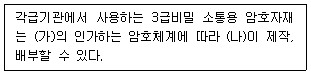
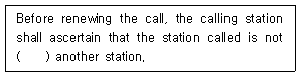
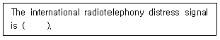
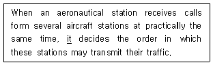
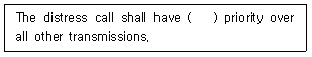
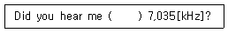
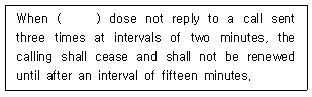
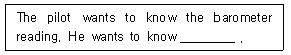

항공무선통신사 (2017-03-04 기출문제)
1과목: 전파법규
1. 다음 중 무선측위업무가 아닌 것은?
- 무선표지업무
- 무선항행업무
- 표준주파수업무
- 무선탐지업무
(정답률: 91%)

2. 국제항공고정무선통신망에 속하는 항공고정국에서 취급하는 제1순위 통보에 붙이는 약어는?
- “SS”
- ”DD”
- “GG”
- “KK“
(정답률: 90%)
3. 다음 중 전파법에서 규정하는 시설자의 정의로 맞는 것은?
- 무선국의 허가를 신청하는자
- 무선설비를 조작하고 운용하는 자
- 미래창조과학부장관으로부터 기술자격증을 받은자
- 미래창조과학부장관으로부터 무선국의 개설허가를 받거나 개설 신고를 하고 무선국을 개설한 자
(정답률: 알수없음)
4. 의무항공국의 무선설비 성능유지를 확인하여야 하는 주기로 옳은 것은?
- 500시간 사용할 때마다 1회 이상 확인
- 1,000시간 사용할 때마다 1회 이상 확인
- 1,500시간 사용할 때마다 1회 이상 확인
- 2,000시간 사용할 때마다 1회 이상 확인
(정답률: 알수없음)
5. 다음 중 항공이동업무 통신에 있어 우선순위가 가장 하위인 것은?
- 기상통보에 관한 통신
- 조난통신
- 무선방향탐지에 관한 통신
- 긴급통신
(정답률: 93%)
6. 항공기국이 무선전화통신으로 무선방향탐지국에 대하여 방위측정용 부호를 송신하고자 하는 경우 송신순서로 맞는 것은?
- 자국의 호출부호 - 각 10초간의 2선 - 자국의 호출부호
- 상대국의 호출부호 - 각 10초간의 2선 - 자국의 호출부호
- 자국의 호출부호 - 각 20초간의 2선 - 상대국의 호출부호
- 상대국의 호출부호 - 각 20초간의 2선 - 자국의 호출부호
(정답률: 알수없음)
7. 전파를 이용하여 모든 종류의 기호, 신호, 문언, 영상, 응향 등의 정보를 보내거나 받는 것을 무엇이라 하는가?
- 전파통신
- 무선통신
- 종합통신
- 다중통신
(정답률: 73%)
8. 항공업무용 단파이동통신시설(HF Radio)의 HF 반송파의 주파수대는?
- 2.2[MHz] ~ 18[MHz]
- 2.2[MHz] ~ 22[MHz]
- 2.8[MHz] ~ 18[MHz]
- 2.8[MHz] ~ 22[MHz]
(정답률: 알수없음)
9. 의무항공기국의 예비전원은 항공기의 항행안전을 위하여 필요한 무선설비를 몇 분 이상 동작시킬 수 있는 성능을 가져야 하는가?
- 10분
- 20분
- 30분
- 40분
(정답률: 알수없음)
10. 항공교통관제에 관한 통신을 하는 항공국과 항공기국용 무선설비의 주파수 전환은 28[MHz] 이하의 주파수대에서 최대 몇 초 이내로 할 수 있어야 하는가?
- 30초
- 20초
- 8초
- 5초
(정답률: 알수없음)
11. 항공기용 구명무선설비의 안테나공급전력의 허용편차로 맞는 것은?
- 상한 50[%] 하한 20[%]
- 상한 50[%] 하한 50[%]
- 사항 10[%] 하한 20[%]
- 사항 20[%] 하한 50[%]
(정답률: 90%)
12. 30[MHz] 초과 300[MHz] 이하의 주파수대를 표시하는 약어는?
- VHF
- SHF
- UHF
- HF
(정답률: 알수없음)
13. 무선국 운용을 휴지하고자 하는 경우 미래창조과학부장관에게 신고하여야 하는 휴지기간은?
- 4개월 이상
- 3개월 이상
- 2개월 이상
- 1개월 이상
(정답률: 알수없음)
14. 무선국을 개설하고자 하는 자는 누구에게 허가를 얻어야 하는가?
- 산업자원부장관
- 미래창조과학부장관
- 국립전파연구원장
- 국토교통부장관
(정답률: 알수없음)
15. 다음 중 무선국 검사 시 성능검사 항목이 아닌 것은?
- 설치장소
- 안테나공급전력
- 불요발사
- 점유주파수대폭
(정답률: 75%)
16. 다음 중 미래창조과학부장관이 무선국의 허가를 취소할 수 있는 경우가 아닌 것은?
- 정당한 사유 없이 계속하여 3개월 동안 무선국의 운용을 휴지한 경우
- 부정한 방법으로 무선국의 허가를 받은 경우
- 개설허가 받은 항공국을 준공검사 받지 않고 운용한 경우
- 전파사용료를 납부하지 아니한 경우
(정답률: 알수없음)
17. 의무항공기국의 A3E 전파 118[MHz] 내지 136.975[MHz]의 주파수대 전파를 사용하는 송신설비의 안테나공급전력은 몇 [W] 이상이어야 하는가?
- 2[W]
- 5[W]
- 10[W]
- 50[W]
(정답률: 알수없음)
18. 다음 중 ITU(국제전기통신연합)의 목적이 아닌 것은?
- 전기통신의 개선과 합리적 이용을 위한 회원국간의 국제협력의 유지 및 증진
- 전기통신분야에서 개발도상국에 대한 기술지원의 장려 및 제공
- 평화적 관계를 증진할 목적으로 하는 전기통신업무의 이용제한
- 일반대중에 의한 이용보급을 위한 기술설비의 개발 촉진
(정답률: 73%)
19. 국제전파규칙(RR)에서 규정한 무선전화의 안전신호는?
- PAN
- MAYDAY
- SAFETY
- SECURITE
(정답률: 알수없음)
20. 다음 중 안전한 전파환경을 조성하기 위한 시책이 아닌 것은?
- 전파 이용을 다각화를 위한 홍보 계획 수립 및 시행
- 전자파가 인체에 미치는 영향 등 보호대책의 수립, 추진
- 기자재 보호를 위한 전자파적합성에 관한 정책의 수립, 추천
- 전자파 인체흡수율, 전자파강도 및 전파환경 등에 대한 관련 기준 마련 기초전파공학
(정답률: 알수없음)
2과목: 기초전파공학
21. 다음 중 전파의 특성으로 틀린 것은?
- 강우에 의해 감쇄된다.
- 일정한 주기를 가진다.
- 진공에서는 진행하지 않는다.
- 직진, 반사, 굴절의 특성을 가지고 있다.
(정답률: 82%)
22. 다음 중 부궤환 증폭기의 장점이 아닌 것은?
- 이득이 증가한다.
- 안정도가 향상된다.
- 잡음이 감소한다.
- 일그러짐(왜곡률)이감소한다.
(정답률: 알수없음)
23. 다음 중 항공기의 계기착륙장치(ILS)와 관계없는 것은?
- 로칼라이저
- 그라이드패스
- 마이커비콘
- 레이다
(정답률: 75%)
24. 다음 중 SSR(Secondary Surveillance Radar)에 대한 설명으로 틀린 것은?
- 방위는 알 수 있지만 거리는 알 수 없다.
- 레이다 화면에 항공기 추가정보 표시를 가능하게 한다.
- 질문기와 응답기로 구성된다.
- 항공기측에서 고도 또는 항공기 식별 코드를 응답할 수 있다.
(정답률: 알수없음)
25. 항법용 NDB(Non-Directional Radio Beacon)에 사용되는 주파수 범위는?
- 200~415[kHz]
- 110.0~117.95[kHz]
- 500~1,000[kHz]
- 108.1~111.95[kHz]
(정답률: 60%)
26. 다음 중 Radar의 기본 구성장비가 아닌 것은?
- Transmitter
- Processor
- Antenna
- Receiver
(정답률: 알수없음)
27. 초단파 전파를 발사하여 활주로에 접근하는 항공기에게 진입로에 대한 수평유도정보를 제공해주는 계기착륙시스템(ILS) 시설은?
- VOR
- Glide path
- Outer marker
- Localizer
(정답률: 알수없음)
28. 다음 중 송신기의 성능조건으로 적합하지 않은 것은?
- 송신되는 주파수는 유동적이어야 한다.
- 스퓨리어스 발사의 강도는 가능한 적어야 한다.
- 변조 직진성이 좋아야 한다
- 신호파에 대한 변조도의 주파수 특성이 좋아야 한다.
(정답률: 알수없음)
29. 다음 중 일반적인 슈퍼헤테로다인 방식의 FM수신기 중간주파수는?
- 10.7[MHz]
- 3.58[MHz]
- 455[kHz]
- 1[MHz]
(정답률: 알수없음)
30. 다음 중 증폭회로에서 발생하는 일그러짐(Distortion)의 종류가 아닌 것은?
- 비직선 일그러짐
- 주파수 일그러짐
- 위상 일그러짐
- 잡음 일그러짐
(정답률: 알수없음)
31. 다음 중 무선통신설비의 접지 목적으로 틀린 것은?
- 정전기로부터의 시스템 보호
- 대지에 대한 회로기준 전위의 안정화
- 낙뢰, 과도전류, 과도전압으로부터 인명 및 시스템보호
- 낙뢰 및 전원개폐기에서 발생되는 서지(Surge) 발생 촉진
(정답률: 60%)
32. 다음 중 상대방위(Relative Bearing)에 대한 설명으로 틀린 것은?
- 항공기 기수방향에서 시계방향으로 측정한 각을 말한다.
- 항공기 기수방향과 국(Station)이 이루는 각을 말한다.
- 국(Station)에 대한 진방위각은 항공기의 침로와 상대방위를 합한 것이다.
- 항공기 기수방향에서 반시계 방향으로 측정한 각을 말한다.
(정답률: 알수없음)
33. 다음 중 수신지점에서 전파의 세기를 측정하는 측정장비는?
- 전파강도측정기
- 데시벨메터
- 회로시험기
- 주파수카운터
(정답률: 85%)
34. 다음 중 안테나와 급전부의 정합을 측정할 수 있는 장비는?
- SWR Meter
- 안테나전류계
- Q-Meter
- 전자전압계
(정답률: 알수없음)
35. 다음 중 전파의 방향탐지에 적합한 안테나는?
- 루프안테나
- 흽 안테나
- 다브렛트 안테나
- 파라보라 안테나
(정답률: 알수없음)
36. λ/4 수직접지안테나의 길이가 25[m]일 경우 사용하기에 가장 적합한 주파수는?
- 12[MHz]
- 6[MHz]
- 3[MHz]
- 1[MHz]
(정답률: 알수없음)
37. 전리층 중 일반적으로 지상으로 부터가 장높고, 단파통신에 주로 이용되는 층은?
- D층
- E층
- F층
- 스포라딕 E층
(정답률: 73%)
38. 직접파와 대지반사파에 의한 가시거리의 근거리통신에 국한되는 전파는 무엇인가?
- 장파
- 중파
- 단파
- 초단파
(정답률: 알수없음)
39. 100[W]의 송신기 출력이 3[dB]만큼 전송손실이 생겼을 경우 안테나에 전달되는 송신기의 출력은 얼마인가?
- 10[W]
- 50[W]
- 100[W]
- 200[W]
(정답률: 알수없음)
40. 직류(DC)를 교류(AC)로 변환시키는 전원공급장치는?
- Inverter
- Converter
- Rectifier
- Rotary Joint
(정답률: 알수없음)
3과목: 통신보안
41. 다음 중 통신보안 측면에서 전기통신에 관한 설명으로 틀린 것은?
- 대량으로 보급되고 있는 신속한 통신 수단이다.
- 유선의 경우 선로에 직접 접속하여 도청할 수 있는 취약점이 있다.
- 전파를 이용한 전기통신은 원칙적으로 평문송신이 불가능하다.
- 전령통신에 비하여 보안도가 낮다.
(정답률: 알수없음)
42. 다음 중 ‘통신정보’와 비교한 ‘통신보안’의 특징으로 옳은 것은? (기출문제 정답을 확보하지 못하여 임의로 정답을 1번으로 설정하였습니다. 정확한 정답을 아시는분 께서는 오류신고를 통하여 정답 작성 부탁 드립니다.)
- 공격수단이다.
- 음성적이다.
- 효과측정이 곤란하다.
- 수집기능이다.
(정답률: 30%)
43. 다음 중 유선전화의 통신보안 대책으로 틀린 것은? (기출문제 정답을 확보하지 못하여 임의로 정답을 1번으로 설정하였습니다. 정확한 정답을 아시는분 께서는 오류신고를 통하여 정답 작성 부탁 드립니다.)
- 가공선로의 지하매설
- 주기적인 선로순찰
- 주요내용 음어화 또는 보안장비 사용
- 전파차단대책 강구
(정답률: 알수없음)
44. 다음 중 인편에 의한 전령통신의 취약성이 아닌 것은?(기출문제 정답을 확보하지 못하여 임의로 정답을 1번으로 설정하였습니다. 정확한 정답을 아시는분 께서는 오류신고를 통하여 정답 작성 부탁 드립니다.)
- 통신의 신속성 결여
- 수취인에 대한 정확한 전달 곤란
- 계절 또는 기후 영향에 노출
- 정보를 탐지하려는 자로부터 피습우려
(정답률: 알수없음)
45. 가치가 없는 통신문이라도 각각의 통신문을 종합 분석하여 필요한 정보를 수집하는 것을 무엇이라 하는가? (기출문제 정답을 확보하지 못하여 임의로 정답을 1번으로 설정하였습니다. 정확한 정답을 아시는분 께서는 오류신고를 통하여 정답 작성 부탁 드립니다.)
- 보안자료입수
- 기만통신
- 통신내용분석
- 교신분석
(정답률: 알수없음)
46. 다음 문장의 (가)와 (나)에 들어갈 알맞은 것은? (기출문제 정답을 확보하지 못하여 임의로 정답을 1번으로 설정하였습니다. 정확한 정답을 아시는분 께서는 오류신고를 통하여 정답 작성 부탁 드립니다.)

- (가) 국가정보원장, (나) 각급기관의 장
- (가) 방송통신위원회위원장, (나) 중앙전파관리소장
- (가) 중앙전파관리소장, (나) 국립전파연구원장
- (가) 한국방송통신전파진흥원장, (나) 중앙전파관리소장
(정답률: 50%)
47. 다음 중 통신보안을 요하는 사항의 취급방법으로 알맞은 것은?
- 보안책임자에게 보고하지 않는다.
- 텔렉스로 통신한다.
- 통신보안용 암호를 정한 후 사용한다.
- 보안책임자가 직접 평문교신한다.
(정답률: 알수없음)
48. 다음 중 “방해통신”을 가장 옳게 정의한 것은? (기출문제 정답을 확보하지 못하여 임의로 정답을 1번으로 설정하였습니다. 정확한 정답을 아시는분 께서는 오류신고를 통하여 정답 작성 부탁 드립니다.)
- 통신소통을 지연, 중단 또는 통신질서를 교란시킬 목적으로 통신망에 대해 혼신 및 잡음 등의 전파를 발사하는 행위
- 통신수단에 의하여 전달되는 비밀내용을 비닉할 목적으로 암호 기술상의 처리를 가한 통신문 내용을 분석하는 행위
- 통신소통과정에서 통신비밀이 누설되는 것을 방지하기 위하여 취해지는 제반 보호대책
- 통신소의 고유명칭 등 통신제원 및 교신량을 기술적으로 획득하기 위하여 혼신 및 잡음 등의 전파를 발사하는 행위
(정답률: 65%)
49. 다음 중 통신보안자재에 대한 보안유지 방법으로 틀린 것은? (기출문제 정답을 확보하지 못하여 임의로 정답을 1번으로 설정하였습니다. 정확한 정답을 아시는분 께서는 오류신고를 통하여 정답 작성 부탁 드립니다.)
- 자재 취급자를 제한한다.
- 일반인의 출입을 금지한다.
- 충분한 교육과 관리를 철저히 한다.
- 보안자재를 휴대가 용이한 보관함에 보관한다.
(정답률: 알수없음)
50. 다음 중 통신도청에 대한 방지책으로 적합하지 않은 것은?
- 통신보안장치를 설치한다.
- 상대방을 확인한다.
- 불필요한 전파발사를 억제한다.
- 통신운용 절차 및 규율을 엄수한다.
(정답률: 알수없음)
4과목: 영어
51. 다음 중 VHF 통신에 있어서 채널의 간격이 8.33[kHz]일 경우 주파수의 통신방법으로 가장 적절한 것은?
- 118.025 –one one eight decimal zero two five
- 118.010 –one one eight decimal zero one
- 118.020 –one one eight point zero two
- 118.010 –one one eight point zero one
(정답률: 85%)
52. 다음 괄호 안에 알맞은 것은?

- in communication to
- in communication of
- in communication with
- in communication for
(정답률: 알수없음)
53. 다음 문장의 괄호 안에 들어갈 알맞은 것은?

- “EMERGENCY”
- ”DISTRESS”
- “MAYDAY”
- “URGENT“
(정답률: 알수없음)
54. 다음 문장의 밑줄 친 it은 무엇을 의미하는가??

- an aircraft station
- an aeronautical station
- an aircraft station or an aeronautical station
- an airspace station
(정답률: 70%)
55. 다음 문장의 괄호 안에 들어갈 알맞은 것은?

- to absolute
- absolutely
- in absolute
- absolute
(정답률: 59%)
56. 다음 괄호 안에 알맞은 것은?

- in
- as
- on
- by
(정답률: 75%)
57. 다음 문장의 괄호 안에 들어갈 알맞은 것은?

- a station to call
- a station called
- a station calling
- a station to be calling
(정답률: 알수없음)
58. “귀하는 D8AA로부터의 조난신호를 수신하였습니까?”의 가장 적절한 표현은?
- Do you have any information about D9AA?
- Have you received the urgency signal sent by D8AA?
- Have you had any information about D8AA?
- Have you received the distress signal sent by D8AA?
(정답률: 알수없음)
59. What dose aviation radio phrase “WILCO” mean?
- I have received your message.
- I understand your transmission.
- I have received your message, understand it, and will comply with it
- My transmission is ended.
(정답률: 알수없음)
60. What is a definition of “OVER” in aviation radio phrase?
- My transmission is ended.
- My transmission is ended and I expect a response from you.
- Let me know that you have received and understand this message.
- This conversation is ended and no response is expected.
(정답률: 알수없음)
61. 항공무선통신에서 숫자“3”을 송신할 때 영문통화표에 의한 발음 방법은?
- TAY-RAH-THRI
- TEY-RAH-THLEE
- TAY-RAH-TREE
- TEY-RAH-TLEE
(정답률: 알수없음)
62. 항공통신용어 “ Affirmative”가 뜻하는 것과 가장 가까운 표현은?
- Yes
- No
- I am right
- Roger
(정답률: 77%)
63. Choose the wrong ICAO phonetic alphabet.
- D : Delta
- I : Indo
- Q : Quebec
- S : Sierra
(정답률: 80%)
64. Choose the wrong ICAO phonetic alphabet.
- F : Foxtrot
- J : Juliett
- R : Roma
- L : Lima
(정답률: 알수없음)
65. “귀 국은 어디에서 어디로 가고 있습니까?“의 적합한 영문표현은?
- Where are you bound for and where are you from?
- Where are you going and where are you coming?
- Where do you go and where did you come?
- Where do you going and whre is your destination?
(정답률: 70%)
66. 시간정보의 송수신 발음으로 옳지 않은 것은?
- 08:16 : ONE SIX, WUN SIX
- 20:57 : FIVE SEVEND, FIFE TREE
- 02:50 : ZERO TWO FIVE ZERO, OU TOO FIFE OU
- 13:00 : ONE THREE ZEOR ZERO, WUN TREE ZE-RO ZE-RO
(정답률: 70%)
67. 조종사가 출할을 위한 모든 점검과 이륙을 위한 활주로 진입준비가 완료되었음을 의미할 때 사용하는 항공통신용어는?
- Ready for take off
- Ready for taxi
- Cleared for take off
- Ready for departure
(정답률: 50%)
68. 다음 중 AIR TRAFFIC SERVICE에 포함되지 않는 것은?
- Flight Information Service
- Air Traffic Advisory service
- Air Traffic Control service
- Flight Detection Service
(정답률: 82%)
69. 다음 문장의 밑줄 친 부분에 알맞은 것은?

- the pollen count
- the atmospheric pressure
- the temperature of the air
- the amount of moisture in the air
(정답률: 알수없음)
70. Which part of an airplane can increase lift during a flight?(오류 신고가 접수된 문제입니다. 반드시 정답과 해설을 확인하시기 바랍니다.)
- A flap
- A rudder
- An aileron
- An elevator
(정답률: 75%)
설명: 무선표지업무는 무선신호를 이용하여 특정 장소나 물체를 표시하는 업무, 무선항행업무는 항공기나 선박 등의 이동 경로를 안전하게 유지하기 위한 업무, 무선탐지업무는 무선신호를 이용하여 불법적인 무선통신을 탐지하는 업무입니다. 하지만 표준주파수업무는 무선주파수를 관리하고, 주파수 대역을 할당하며, 주파수 이용 신청을 검토하는 업무로서, 무선측위와는 직접적인 관련이 없습니다.